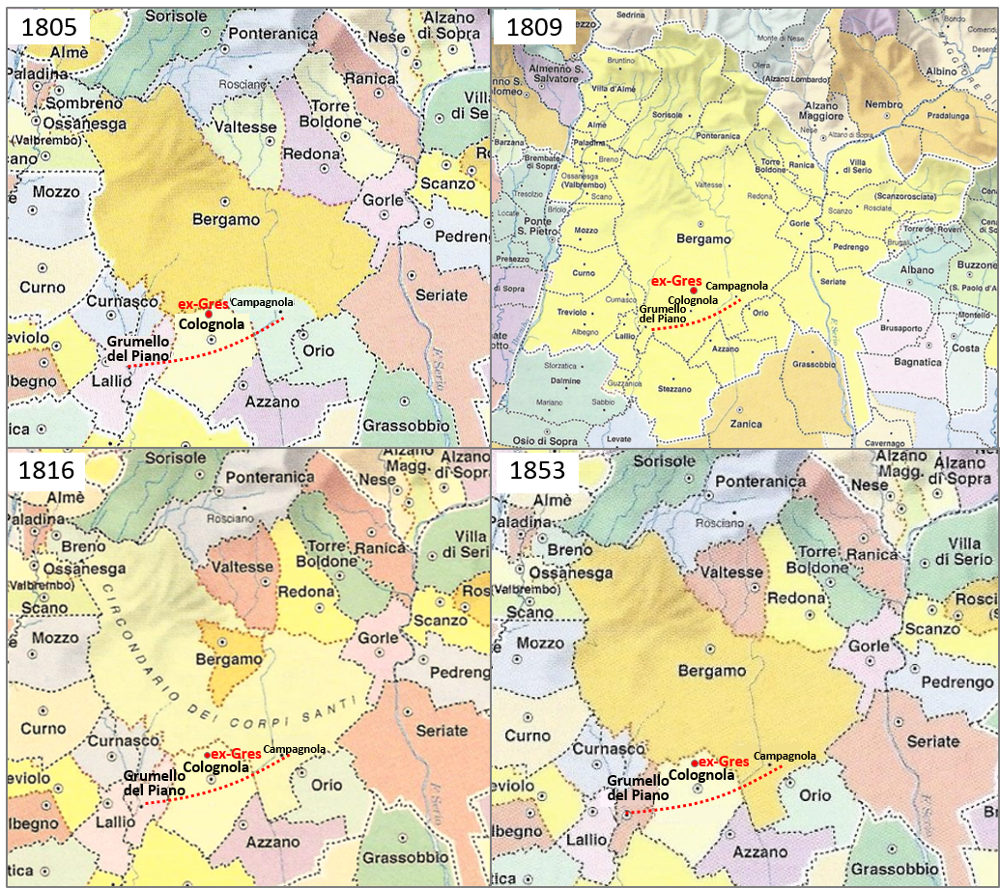

| EVOLUZIONE STORICA DEI CORPI SANTI |
|  Circoscrizioni comunali dal 1805 al 1853 (Oscar, Belotti, 2000) |
Le periferie di Bergamo si contraddistinguono per uno sviluppo condizionato in parte dalla presenza dei Corpi Santi,
che hanno rappresentato per secoli, e ancora oggi rappresentano, dei
poli attorno alla città caratterizzati da una forte identità. Quello
dei Corpi Santi è un fenomeno che ha interessato i centri urbani
lombardi dall’Alto Medioevo alla seconda metà del XIX secolo, con la
costituzione, nell’area di transizione tra città e campagna, di un
suburbio esterno alle mura. Il confronto tra le circoscrizione comunali
di Bergamo dell’inizio e della metà dell’Ottocento mostra la loro
importanza ed evoluzione amministrativa (Fig. 13). I Corpi Santi – che
sembra prendano il proprio nome dall’usanza di seppellire appena fuori
dalle mura le reliquie dei martiri cristiani – identificavano le
proprietà di campagna delle chiese e delle congregazioni religiose,
indicando di fatto l’insieme dei beni situati oltre le mura con
immunità ecclesiale (Ghizzardi, 1996; Ferlinghetti, 2012). Questi
borghi vennero quindi a identificare una fascia di territorio di una
distanza variabile fino a un miglio circa che dipendeva dalla città
come pertinenza diretta, costituendo il confine massimo urbano, in
contrapposizione al contado (Ferlinghetti, 2012 e 2015). L’importanza dei Corpi Santi a Bergamo è conseguente al fatto che essi hanno mantenuto nel tempo un ruolo di connessione tra il centro urbano e il contado, simili, seppure con qualche forzatura, ai nodi di una struttura reticolare urbana. Durante il periodo di dominazione austriaca alcuni di questi Corpi Santi, tra cui Colognola, uno dei maggiori, videro riconosciuta la propria autonomia diventando comuni indipendenti da Bergamo, a sottolineare come ognuno di questi piccoli centri avesse una propria funzionalità e consapevolezza identitaria. Ciò ha influito sulla definizione di uno sviluppo di “periferia” del tutto peculiare che non presenta quei caratteri di anonimato propri dei quartieri-dormitori. Seppure si riscontrino, in alcuni casi, le stesse criticità di altre periferie urbane, ossia il disagio sociale prodotto dai fenomeni di ghettizzazione, è necessario sottolineare come queste si manifestino in quartieri di recente fondazione – come l’area di via Moroni (Villaggio Sposi), a ovest dell’area ex-Gres – non dotati dello stesso substrato storico e della stessa identità che troviamo, per esempio, nei Corpi Santi di Colognola o Campagnola. Naturalmente non si sta proponendo una reinterpretazione in chiave contemporanea del rapporto città/Corpi Santi quale recupero letterale – forme e materiali – di tali borghi storici ma piuttosto si vuole considerare la loro presenza un patrimonio territoriale da valorizzare in senso culturale per favorire l’aggregazione dei nuovi quartieri limitrofi in una funzionalità policentrica rivisitata. |